In this chapter, we have a look at neural networks which are a popular machine learning method. We will cover the basics of neural networks and how they can be trained.
4.1 What is a Neural Network?
Neural networks are at the core of many cutting-edge machine learning models. They can be used as both a supervised and unsupervised learning method. In this course, we will focus on their application in supervised learning where they are used for both regression and classification tasks. While they are conceptually not much more difficult to understand than decision trees, a neural network is not as easy to interpret as a decision tree. For this reason, they are often called black boxes, meaning that it is not so clear what is happening inside. Furthermore, neural networks tend to be more difficult to train and for tabular data, which is the type of structured data that you will typically encounter, gradient-boosted decision trees tend to perform better. Nevertheless, since neural networks are what enabled many of the recent advances in AI, they are an important topic to cover, even if it is only to better understand what has been driving recent innovations.
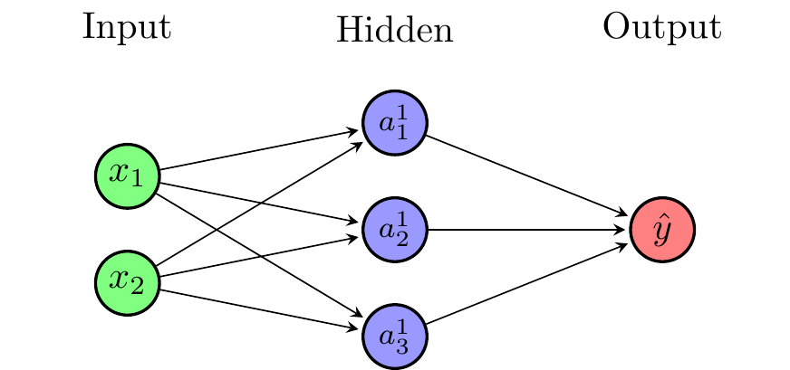
Figure 4.1: A Single-Layer Feedforward Neural Network
It is common to represent neural networks as directed graphs. Figure 4.1 shows a single-layer feedforward neural network with \(N=2\) inputs, \(M=3\) neurons in the hidden layer, and a single output. The input layer is connected to the hidden layer, which is connected to the output layer. For simplicity, we will only consider neural networks that are feedforward (i.e. their graphs are acyclical), with dense layers (i.e. each layer is fully connected to the previous), and without connections that skip layers.
As we will see later on, under certain (relatively weak) conditions
Neural networks are universal approximators (can approximate any (Borel measurable) function)
Neural networks break the curse of dimensionality (can handle very high dimensional functions)
This makes them interesting for a wide range of fields in economics, e.g., quantitative macroeconomics or econometrics. However, neural networks are not a magic bullet, and there are some downsides in terms of the large data requirements, interpretability and training difficulty.
4.1.1 Origins of the Term “Neural Network”
Figure 4.2: A biological neuron (Source: Wikipedia)
The term “neural network” originates in attempts to find mathematical representations of information processing in biological systems (Bishop 2006). The biological interpretation not very important for research anymore and one should not get too hung up on it. However, the interpretation can be useful when starting to learn about neural networks. Figure 4.2 shows a biological neuron.
4.2 An Artificial Neuron
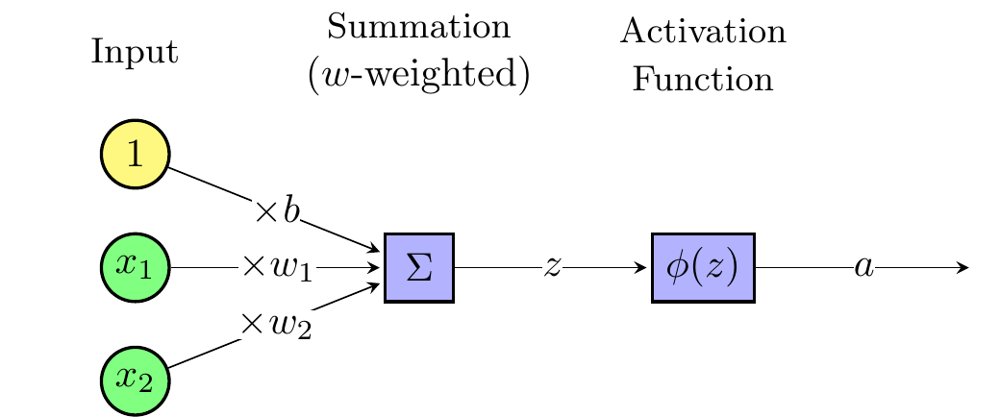
Figure 4.3: Artificial Neuron
Artificial neurons are the basic building blocks of neural networks. Figure 4.3 shows a single artificial neuron. The \(N\) inputs denoted \(x=(x_1,x_2,\ldots,x_N)'\) are linearly combined into \(z\) using weights \(w\) and bias \(b\)
The activation function introduces non-linearity into the neural network and allows it to learn highly non-linear functions. The particular choice of activation function depends on the application.
This should look familiar to you already. If we set \(\phi(z)=z\), we get a linear regression model and if we set \(\phi(z)=\frac{1}{1+e^{-z}}\), we get a logistic regression model. This is because the basic building block, the artificial neuron, is a generalized linear model.
4.2.1 Activation Functions
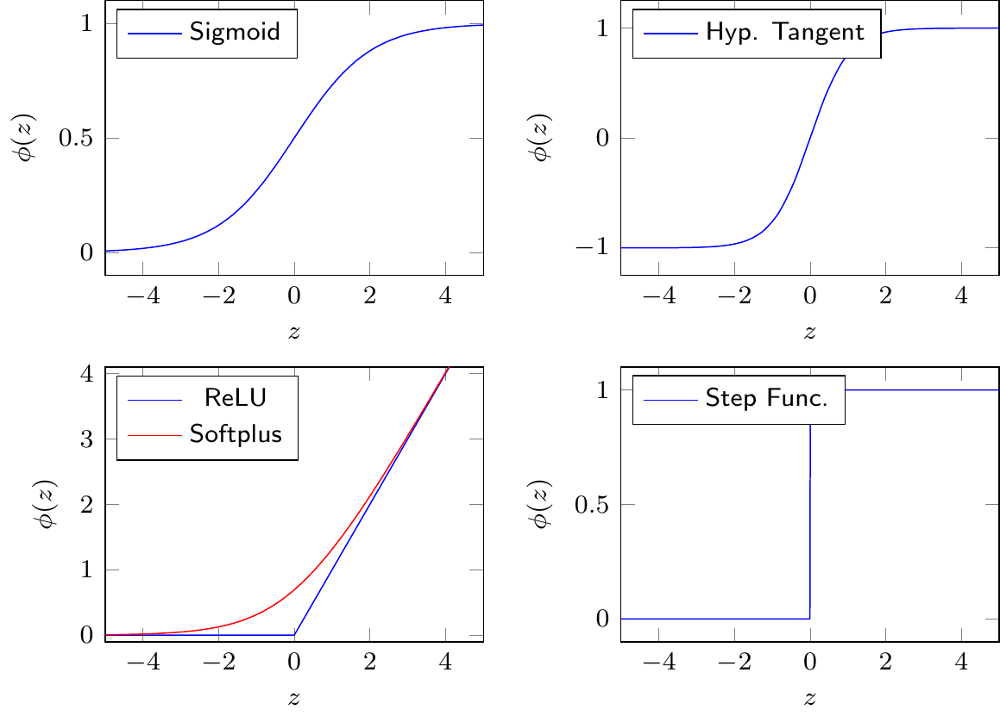
Figure 4.4: Activation Functions
Common activation functions include
Sigmoid: \(\phi(z) = \frac{1}{1+e^{-z}}\)
Hyperbolic tangent: \(\phi(z) = tanh(z)\)
Rectified linear unit (ReLU): \(\phi(z) = \max(0,z)\)
Softplus: \(\phi(z) =\log(1+e^{z})\)
ReLU has become popular in deep neural networks in recent years because of its good performance in these applications. Since economic problems usually involve smooth functions, softplus can be a good alternative.
4.2.2 A Special Case: Perceptron
Perceptrons were developed in the 1950s and have only one artificial neuron. Perceptrons use a step function as an activation function
Perceptrons can be used for basic classification. However, the step function is usually not used in neural networks because it is not differentiable at \(z=0\) and zero everywhere else. This makes it unsuitable for the back-propagation algorithm, which is used for determining the network weights.
Mini-Exercise
What would the decision boundary of a perceptron look like if we have two inputs \(x_1\) and \(x_2\) and the weights \(w_1=1\), \(w_2=1\), and \(b=-1\)?
4.3 Building a Neural Network from Artificial Neurons
We can build a neural network by stacking multiple artificial neurons. For this reason, it is sometimes also called a multilayer perceptron (MLP). A single-layer neural network is a linear combination of \(M\) artificial neurons \(a_j\)
where \(N\) is the number of inputs, \(M\) is the number of neurons in the hidden layer, and \(w\) are the weights and biases of the network. The width of the neural network is \(M\).
Figure 4.5 shows a single-layer feedforward neural network with \(N=2\) inputs, \(M=3\) neurons in the hidden layer, and a single output. Note that the biases can be thought of as additional weights that are multiplied by a constant input of 1.
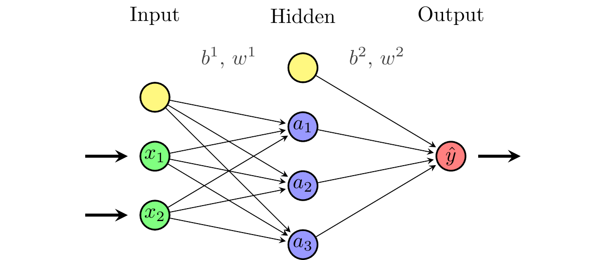
Figure 4.5: A Single-Layer Feedforward Neural Network with Biases shown explicitly
4.4 Relation to Linear Regression
Note that if we use a linear activation function, e.g. \(\phi(x)=x\), the neural network collapses to a linear regression
with appropriately defined regression coefficients \(\tilde{w}\).
Recall that in our description of Figure 2.2 we argued that a machine learning algorithm would automatically turn the slider to find the best fit. This is exactly what the training algorithm has to do to train a neural network.
4.5 A Simple Example
Suppose we want to approximate \(f(x)=exp(x)-x^3\) with 3 neurons. The approximation might be
\[\hat{f}(x)=a_1+a_2-a_3\]
where
\[a_1=max(0,-3x-1.5)\]
\[a_2=max(0,x+1)\]
\[a_3=max(0,3x-3)\]
Our neural network in this case uses ReLU activation functions and has all weights equal to one in the output layer. Figure 4.6 shows the admittedly poor approximation of \(f(x)\) by \(\hat{f}(x)\) using this neural network. Given the piecewise linear nature of the ReLU activation function, the approximation is not very good. However, with more neurons, we could get a better approximation.
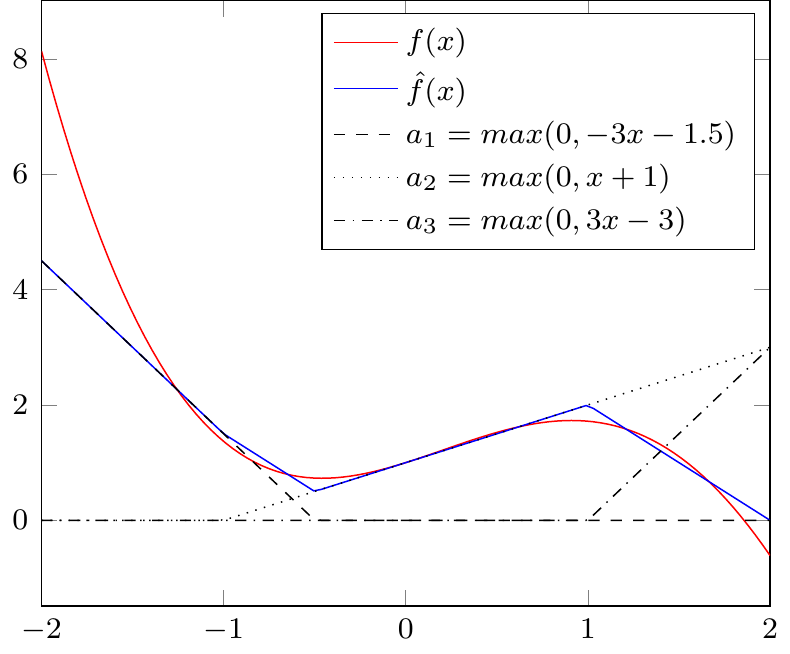
Figure 4.6: Approximation by a Neural Network
Figure 4.7 shows an interactive version of Figure 4.6 where you can adjust the weights of the neural network to approximate a simple dataset. As you can see, it is quite tricky to find parameters that approximate the function well. This is where the training algorithm comes in. It will automatically adjust the weights to minimize a loss function.
{//const dataRange = [-2,2];const yDataRange = [-2,9];// Compute approximation and true functionfunctionfeedforward(inputRange) {let loss = [];let N =100;for (let i =0; i <=100; i +=1) {let x = inputRange[0] + i * (inputRange[1] - inputRange[0])/100let h1 =Math.max(0, w11*x + b11);let h2 =Math.max(0, w12*x + b12);let h3 =Math.max(0, w13*x + b13);let y = b2 + w21 * h1 + w22 * h2 - w23 * h3;let dataPoint = {"x": x,"y": y}; loss.push(dataPoint) }return loss; }functiontruefunction(inputRange) {let loss = [];let N =100;for (let i =0; i <=100; i +=1) {let x = inputRange[0] + i * (inputRange[1] - inputRange[0])/100let y =Math.exp(x) - x**3;let dataPoint = {"x": x,"y": y}; loss.push(dataPoint) }return loss; }let approxData =feedforward(dataRange)let trueData =truefunction(dataRange)// Plot approximation and true functionreturn Plot.plot({marginLeft:40,marginTop:20,width: width -2,height: width *2/3-2,x: { domain: dataRange,label:"x"},y: { domain: yDataRange,label:"y"},marks: [ Plot.frame(), Plot.line(trueData, {x:"x",y:"y",stroke:"red"}), Plot.line(approxData, {x:"x",y:"y",stroke:"steelblue"}) ],nice:true })}
If you want to play around with neural networks, you can use the TensorFlow Playground: https://playground.tensorflow.org. It is a web-based tool that allows you to experiment with neural networks and see how they learn. Figure 4.8 shows the interface of the TensorFlow Playground.
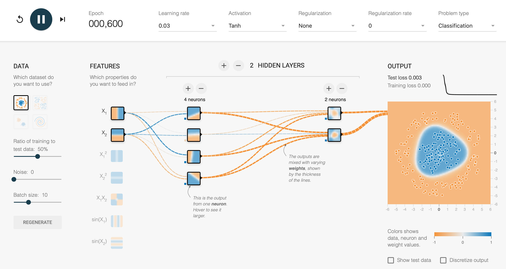
Figure 4.8: Tesorflow Playground
4.6 Deep Neural Networks
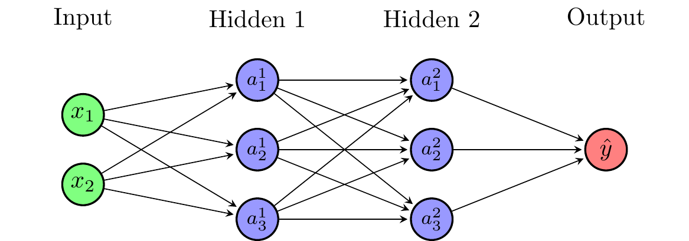
Figure 4.9: Deep Neural Network
Deep neural networks have more than one hidden layer. The number of hidden layers is also called the depth of the neural network. Deep neural networks can learn more complicated things. For simple function approximation, a single hidden layer is sufficient. Figure 4.9 shows a deep neural network with two hidden layers.
The first hidden layer consists of \(M_1\) artificial neurons with inputs \(x_1,x_2,\ldots,x_N\)
Note that the activation functions do not need to be the same everywhere. In principle, we could vary the activation functions even within a layer.
4.7 Universal Approximation and the Curse of Dimensionality
Recall that we want to approximate an unknown function in supervised learning tasks
\[y = f(x)\]
where \(y=(y_1,y_2,\ldots,y_K)'\) and \(x=(x_1,x_2,\ldots,x_N)'\) are vectors. The function \(f(x)\) could stand for many different functions in economics (e.g. a value function, a policy function, a conditional expectation, a classifier, \(\ldots\)).
It turns out that neural networks are universal approximators and break the curse of dimensionality. The universal approximation theorem by Hornik, Stinchcombe, and White (1989) states:
A neural network with at least one hidden layer can approximate any Borel measurable function mapping finite-dimensional spaces to any desired degree of accuracy.
Breaking the curse of dimensionality (Barron, 1993)
A one-layer NN achieves integrated square errors of order \(O(1/M)\), where \(M\) is the number of nodes. In comparison, for series approximations, the integrated square error is of order \(O(1/(M^{2/N}))\) where \(N\) is the dimensions of the function to be approximated.
4.8 Training a Neural Network: Determining Weights and Biases
We have not yet discussed how to determine the weights and biases. The weights and biases \(w\) are selected to minimize a loss function
where \(N\) refers to the number of input-output pairs that we use for training and \(E_n(w; x_n, y_n)\) refers to the loss of an individual pair \(n\).
For notational simplicity, I will write \(E(w)\) and \(E_n(w)\) in the following or in some cases even omit argument \(w\).
4.8.1 Choice of Loss Function
The choice of loss function depends on the problem at hand. In regressions, one often uses a mean squared error (MSE) loss
where \(k\) refers to \(k\)th class (or \(k\)th element) in the output vector.
4.8.2 Gradient Descent
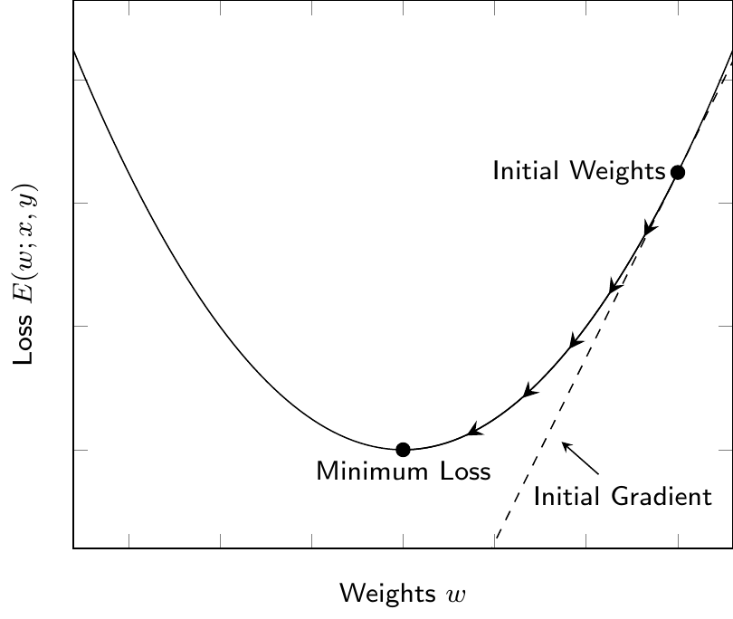
Figure 4.10: Gradient Descent
The weights and biases are determined by minimizing the loss function using a gradient descent algorithm. The basic idea is to compute how the loss changes with the weights \(w\) and step into the direction that reduces the loss. Figure 4.10 shows a simple example of a loss function and the gradient descent algorithm. The basic steps of the algorithm are
Initialize weights (e.g. draw from Gaussian distribution)
\[w^{(0)} \sim N(0,I)\]
Compute the gradient of the loss function with respect to weights
Minibatch gradient descent: Use a small batch of observations (e.g. 32) to compute the gradient and update the weights for each minibatch
These algorithms are less likely to get stuck in a shallow local minimum of the loss function because they are “noisier”. Figure 4.11 shows a comparison of the different gradient descent algorithms. Minibatch gradient descent is probably the most commonly used and is also what we will be using in our implementation in Python.
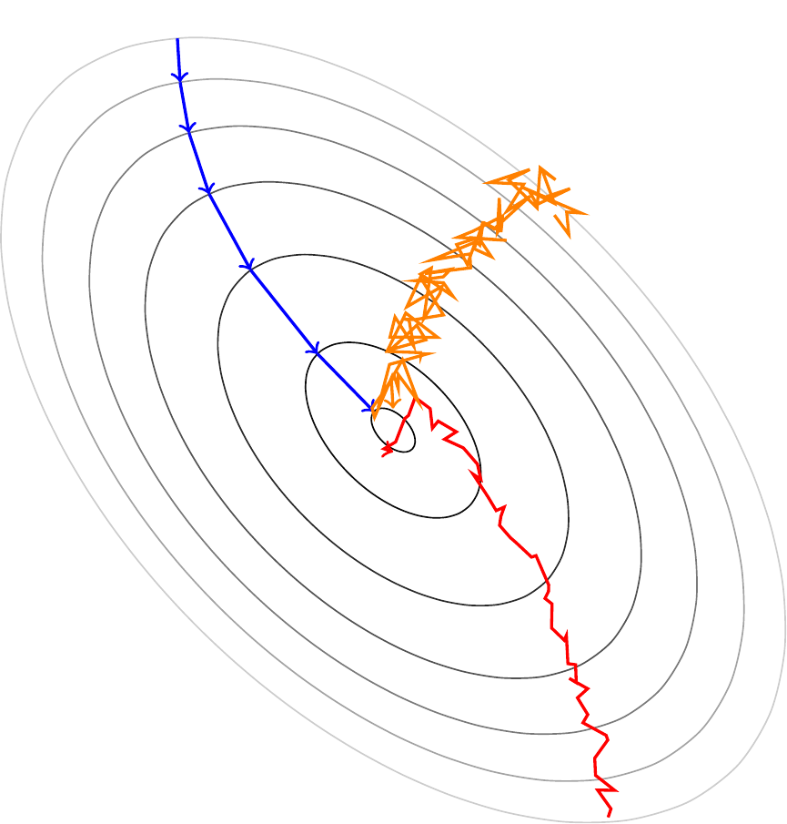
Figure 4.11: Comparison of Gradient Descent Types (blue: Full Batch, red: Minibatch, orange: Stochastic)
4.8.3 Backpropagation Algorithm
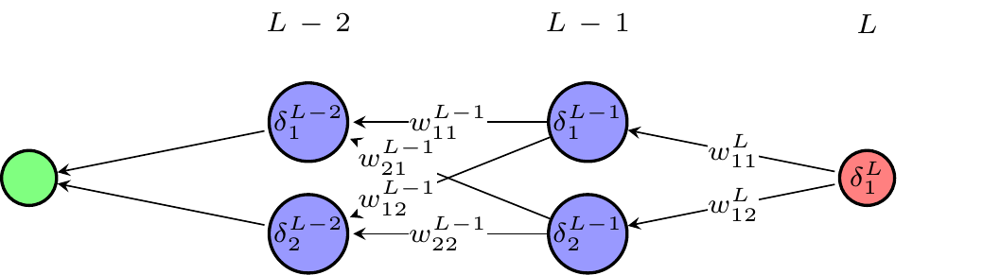
Figure 4.12: Backpropagation Algorithm
Computing the gradient seems to be a daunting task since a weight in the first layer in a deep neural network affects the loss function potentially through thousands of “paths”. The backpropagation algorithm (Rumelhart et al., 1986) provides an efficient way to evaluate the gradient. The basic idea is to go backward through the network to evaluate the gradient as shown in Figure 4.12. If you are interested in the details, I recommend reading the notes by Nielsen (2019).
4.9 Practical Considerations
From a practical perspective, there are many more things to consider. Often times it’s beneficial to do some (or all) of the following
Input/output normalization: (e.g. to have unit variance and mean zero) can improve the performance of the NN
Check for overfitting: by splitting the dataset into a training dataset and a test dataset
Regularization: to avoid overfitting (e.g. add a term to lose function that penalizes large weights)
Adjust the learning rate:\(\eta\) during training
We have already discussed some of these topics in the context of other machine learning algorithms.
4.10 Python Implementation
Let’s have a look at how to implement a neural network in Python.
4.10.1 Implementing the Feedforward Part of a Neural Network
As a small programming exercise and to improve our understanding of neural networks, let’s implement the feedforward part of a neural network from scratch. We will have to calculate the output of the network for some given weights and biases, as well as some inputs. Let’s start by importing the necessary libraries
import numpy as np
Next, we define the activation function for which we use the sigmoid function
def activation_function(x):return1/(1+np.exp(-x)) # sigmoid function
Now, we define the feedforward function which calculates the output of the neural network given some inputs, weights, and biases. The function takes the inputs, weights, and biases as arguments and returns the output of the network
def feedforward(inputs, w1, w2, b1, b2):# Compute the pre-activation values for the first layer z = b1 + np.matmul(w1, inputs)# Compute the post-activation values for the first layer a = activation_function(z)# Combine the post-activation values of the first layer to an output g = b2 + np.matmul(w2, a)return g
Mathematically, the function computes the following
\(z = b^{1} + w^1 x\)
\(a = \phi(z)\)
\(g = b^2 + w^2 a\)
and returns \(g\) at the end. We have written this using matrix notation to make it more compact. Remember that node \(j\) in the hidden layer is given by
Let’s test the function with some example inputs, weights and biases
# Define the weights and biasesw1 = np.array([[0.1, 0.2], [0.3, 0.4]]) # 2x2 matrixw2 = np.array([0.5, 0.6]) # 1-d vectorb1 = np.array([0.1, 0.2]) # 1-d vectorb2 =0.3# Define the inputsinputs = np.array([1, 2]) # 1-d vector# Compute the output of the networkfeedforward(inputs, w1, w2, b1, b2)
np.float64(1.0943291429384328)
To operationalize this, we would also need to define a loss function and an optimization algorithm to update the weights and biases. However, this is beyond the scope of this course.
4.10.2 Using Neural Networks in Sci-Kit Learn
Sci-kit learn provides a simple interface to use neural networks. However, it is not as flexible as the more commonly used PyTorch or TensorFlow. We can reuse the dataset of credit card transactions from Kaggle.com to demonstrate how to use neural networks in scikit-learn.
import pandas as pdimport numpy as npimport matplotlib.pyplot as pltimport seaborn as snsfrom sklearn.preprocessing import StandardScaler, MinMaxScalerfrom sklearn.neural_network import MLPClassifierfrom sklearn.model_selection import train_test_splitfrom sklearn.metrics import confusion_matrix, accuracy_score, roc_auc_score, recall_score, precision_score, roc_curvepd.set_option('display.max_columns', 50) # Display up to 50 columnsfrom io import BytesIOfrom urllib.request import urlopenfrom zipfile import ZipFileimport os.path# Check if the file existsifnot os.path.isfile('data/card_transdata.csv'):print('Downloading dataset...')# Define the dataset to be downloaded zipurl ='https://www.kaggle.com/api/v1/datasets/download/dhanushnarayananr/credit-card-fraud'# Download and unzip the dataset in the data folderwith urlopen(zipurl) as zipresp:with ZipFile(BytesIO(zipresp.read())) as zfile: zfile.extractall('data')print('DONE!')else:print('Dataset already downloaded!')# Load the datadf = pd.read_csv('data/card_transdata.csv')# Split the data into training and test setsX = df.drop('fraud', axis=1) # All variables except `fraud`y = df['fraud'] # Only our fraud variablesX_train, X_test, y_train, y_test = train_test_split(X, y, stratify=y, test_size =0.3, random_state =42)# Scale the featuresdef scale_features(scaler, df, col_names, only_transform=False):# Extract the features we want to scale features = df[col_names] # Fit the scaler to the features and transform themif only_transform: features = scaler.transform(features.values)else: features = scaler.fit_transform(features.values)# Replace the original features with the scaled features df[col_names] = featurescol_names = ['distance_from_home', 'distance_from_last_transaction', 'ratio_to_median_purchase_price'] scaler = StandardScaler() scale_features(scaler, X_train, col_names)scale_features(scaler, X_test, col_names, only_transform=True)
Dataset already downloaded!
Recall that the target variable \(y\) is fraud, which indicates whether the transaction is fraudulent or not. The other variables are the features \(x\) of the transactions.
To use a neural network for a classification task, we can use the MLPClassifier class from scikit-learn. The following code snippet shows how to use a neural network with one hidden layer with 16 nodes
If you would like to use a neural network with multiple hidden layers, you can specify the number of nodes per hidden layer using the hidden_layer_sizes parameter. For example, the following code snippet shows how to use a neural network with two hidden layers, one with 5 nodes and the other with 4 nodes
Note that the alpha parameter specifies the regularization strength, the activation parameter specifies the activation function (by default it uses relu) and the random_state parameter specifies the seed for the random number generator (useful for reproducible results).
We can check the loss curve to see how the neural network loss declined during training
The neural network performs substantially better than the logistic regression. As in the case of the tree-based methods, the ROC AUC score is much closer to the maximum value of 1 and we have an almost perfect classifier
Let’s also check the confusion matrix to see where we still make mistakes
conf_mat = confusion_matrix(y_test, y_pred, labels=[1, 0]).transpose() # Transpose the sklearn confusion matrix to match the convention in the lecturesns.heatmap(conf_mat, annot=True, cmap='Blues', fmt='g', xticklabels=['Fraud', 'No Fraud'], yticklabels=['Fraud', 'No Fraud'])plt.xlabel("Actual")plt.ylabel("Predicted")plt.show()
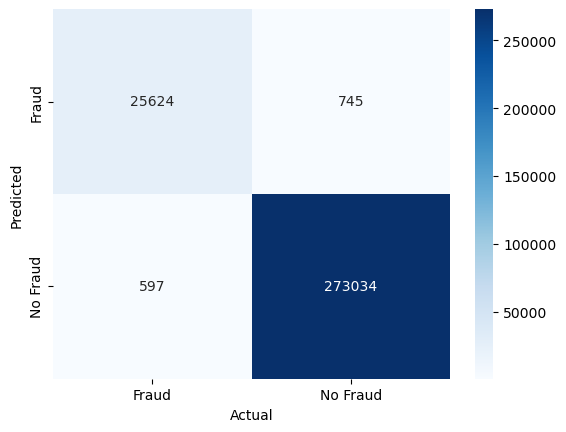
There are around 270 false negatives, i.e., a fraudulent transaction that we did not detect. There are also around 980 false positives, i.e., “false alarms”, where non-fraudulent transactions were classified as fraudulent.
4.10.3 Using Neural Networks in PyTorch
While it is possible to use neural networks in scikit-learn, it is more common to use PyTorch or TensorFlow for neural networks. PyTorch is a popular deep-learning library that is widely used in academia and industry. In this section, we will show how to use PyTorch to build a simple neural network for the same credit card fraud detection task.
Feel Free to Skip This Section
This section might be a bit more challenging than what we have looked at previously. If you think that you are not ready for this, feel free to skip this section. This is mainly meant to be a starting point for those who are interested in learning more about neural networks.
Note that we also converted the input values to float32 for improved training speed and the target values to long which is a type of integer (remember our target y can only take values zero or one). Next, we need to create a DataLoader object to load the data in mini-batches during the training process
Next, we define the neural network model using the nn module from PyTorch
model = torch.nn.Sequential( torch.nn.Linear(7, 16), # 7 input features, 16 nodes in the hidden layer torch.nn.ReLU(), # ReLU activation function torch.nn.Linear(16, 2) # 16 nodes in the hidden layer, 2 output nodes (fraud or no fraud))
We also need to define the loss function and the optimizer. We will use the cross-entropy loss function and the Adam optimizer
loss_fn = torch.nn.CrossEntropyLoss()optimizer = torch.optim.Adam(model.parameters(), lr=1e-3, weight_decay=1e-5) # Adam optimizer with learning rate of 0.001 and L2 regularization (analogous to alpha in scikit-learn)
We can now train the neural network using the following code snippet
for epoch inrange(80):# Loop over batches in an epoch using DataLoaderfor id_batch, (X_batch, y_batch) inenumerate(dataloader):# Compute the predicted y using the neural network model with the current weights y_batch_pred = model(X_batch)# Compute the loss loss = loss_fn(y_batch_pred, y_batch)# Reset the gradients of the loss function to zero optimizer.zero_grad()# Compute the gradient of the loss with respect to model parameters loss.backward()# Update the weights by taking a "step" in the direction that reduces the loss optimizer.step()if epoch %10==9:print(f"Epoch {epoch} loss: {loss.item():>7f}")
Note that here we are updating the model weights for each mini-batch in the dataset and go over the whole dataset 80 times (epochs). We print the loss every epoch to see how the loss decreases over time.
The following snippet shows how to use full-batch gradient descent instead of mini-batch gradient descent
for epoch inrange(2000):# Compute the predicted y using the neural network model with the current weights y_epoch_pred = model(X_train_tensor)# Compute the loss loss = loss_fn(y_epoch_pred, y_train_tensor)# Reset the gradients of the loss function to zero optimizer.zero_grad()# Compute the gradient of the loss with respect to model parameters loss.backward()# Update the weights by taking a "step" in the direction that reduces the loss optimizer.step()# Print the loss every 100 epochsif epoch %100==99:print(f"Epoch {epoch} loss: {loss.item():>7f}")
Note that in this version we are updating the model weights 2000 times (epochs) and printing the loss every 100 epochs. We can now evaluate the model on the test set
Note that for simplicity we are reusing the sci-kit learn metrics to evaluate the model.
However, our neural network trained in PyTorch does not perform exactly the same as the neural network trained in scikit-learn. This is likely because of different hyperparameters or different initializations of the weights. In practice, it is common to experiment with different hyperparameters to find the best model or to use grid search and cross-validation to try many values and find the best-performing ones.
4.10.4 Conclusions
In this chapter, we have learned about neural networks, which are the foundation of deep learning. We have seen how to implement parts of a simple neural network from scratch and how to use neural networks in scikit-learn and PyTorch.